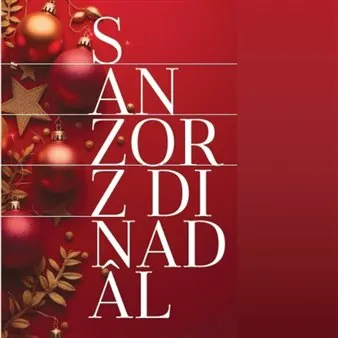

da ven 4 dic a sab 16 gen
San Zorz di Nadâl
Rassegna degli eventi di Natale "San Zorz di Nadâl" a San Giorgio di Nogaro dal 4 Dicembre 2026 al 16 Gennaio 2027
 Indicazioni
Indicazioni
- Costi e prenotazioni
- Costo non indicato · Prenotazione non indicata
- Programma
- Programma da verificare. Apri la fonte ufficiale per orari e possibili aggiornamenti.
- In caso di maltempo
- Nessuna indicazione specifica pubblicata.
- Note
- Acquisito automaticamente dalla fonte.
L’EVENTO
Descrizione completa
San Zorz di Nadâl è una rassegna di eventi di Natale a San Giorgio di Nogaro che inizia il 4 Dicembre 2026 e finisce il 16 Gennaio 2027.
Il programma prevede: Venerdì 4 Dicembre 2026 alle ore 21.00 “Restiamo Umani" - concerto composto dalle musiche originali di Nicola Milan e accompagnato dalla voce recitante di Paolo Mutti. Lo spettacolo si terrà presso la Chiesa del Cuore Immacolato di Maria in Via Venezia 16 a Zellina (San Giorgio di Nogaro). Sabato 5 Dicembre 2026 alle ore 11.00 "I Manifesti della Coldiretti 1960/69, agricoltura del dopoguerra" - inaugurazione mostra presso Villa Dora, edificio Liberty in Piazza Plebiscito 2 a San Giorgio di Nogaro. Domenica 6 Dicembre 2026 alle ore 16.00 "Accensione dell'albero di Natale" a San Giorgio di Nogaro - animazione e spettacoli per bambini con l’arrivo di Babbo Natale. Domenica 6 Dicembre 2026 alle ore 20.30 "Buon Natale signor Scrooge" - spettacolo teatrale sul famoso personaggio di Charles Dickens realizzato dal gruppo teatrale "Le giovani Bussole". L’evento si terrà presso l'auditorium San Zorz Musical in Piazza Duomo a San Giorgio di Nogaro. Lunedì 7 Dicembre 2026 alle ore 18.00 "Neveade" - spettacolo di musica e danza in lingua Friulana. Bevilacqua e Somaglino partiranno dal testo illustrato di Emanuele Bertossi per raccontare con il corpo e la parola una storia antica di resistenza e amore. Lo spettacolo è a cura di Teatri Stabil Furlan e si terrà presso sala conferenze di villa Dora in Piazza Plebiscito 1 a San Giorgio di Nogaro. Venerdì 11 Dicembre 2026 doppio appuntamento: alle ore 17.00 "L'ora delle storie, piccole storie grandi emozioni" - letture per bambini a cura delle lettrici volontarie. L’evento si terrà presso la sala ragazzi di Villa Dora in Piazza Plebiscito 1 a San Giorgio di Nogaro. Il secondo evento dal titolo “Lusive la Lune il nadâl ta tradizion musicâl furlane” è un concerto natalizio in lingua Friulana e si terrà invece alle ore 21.00 presso la chiesa di San Leonardo in Via del Porto 17 a Porto Nogaro. Martedì 15 Dicembre 2026 alle ore 21.00 "Glorious" – spettacolo di musica Gospel e Soul. L’evento si terrà presso la chiesa di San Floriano Martire in Via Famula a Villanova (San Giorgio di Nogaro). Mercoledì 16 Dicembre 2026 alle ore 18.30 " Il Sole nelle Pozzanghere” – presentazione libro di Matteo Bussola. Dialogherà con l'autore Paolo Zamparo. La presentazione si terrà presso sala conferenze di Villa Dora in Piazza Plebiscito 1 a San Giorgio di Nogaro. Venerdì 18 Dicembre 2026 alle ore 17.00 "Canto di Natale" – canto di Natale dall’omonima fiaba di Dickens a cura del centro teatrale Da Ponte. Il concerto si terrà presso l'auditorium San Zorz in Piazza Duomo 4 a San Giorgio di Nogaro. Sabato 19 Dicembre 2026 alle ore 18.00 "Maurizio Brunod Solo" - concerto di Maurizio Brunod, tra i più noti chitarristi Italiani, si esibirà presso la sala conferenze di Villa Dora in Piazza Plebiscito 1 a San Giorgio di Nogaro. Martedì 22 Dicembre 2026 doppio appuntamento: alle ore 18.00 " Piccolo concerto di Natale" - Il coro Artemia di Torvis si esibirà in un concerto di Natale per augurare buone feste atutta la cittadinanza. L’esibizione è diretta da Denis Monte. L’evento si terrà presso il palco di Villa Dora in Piazza Plebiscito 1 a San Giorgio di Nogaro. Alle ore 21.00 concerto di Natale “The Christmas sky" del Freevoices Show Chair presso l'auditorium San Zorz in Piazza Duomo 4 a San Giorgio di Nogaro. Giovedì 24 Dicembre 2026 alle ore 18.00 - "Inaugurazione presepe Chiarisacco". Il presepe giunge quest’anno alla sua 39° Edizione. L'ideazione e la direzione artistica è stata affidata alla incredibile fantasia e professionalità dell'architetto Paolo Morettin. Inaugurazione si terrà presso il Laghetto comunale di Chiarisacco in Via Emilia 2 San Giorgio di Nogaro. Sabato 16 Gennaio 2027 alle ore 20.45 "Concerto di inizio anno" - Concerto di inizio anno a cura della nuova banda Comunale di San Giorgio di Nogaro, che si terrà presso l'auditorium San Zorz in Piazza Duomo 4 a San Giorgio di Nogaro. Per maggiori info e dettagli consultare il sito di Villa Dora
IL PROGRAMMA
Programma e orari
Appuntamenti raccolti dalle fonti elencate. Dove manca un orario, non è ancora disponibile in questa scheda.
Programma pubblicato
- Dal 2026-12-04 al 2027-01-16
INFORMAZIONI UTILI
Prima di partire
- Controllare la fonte prima di partire.
ORGANIZZAZIONE